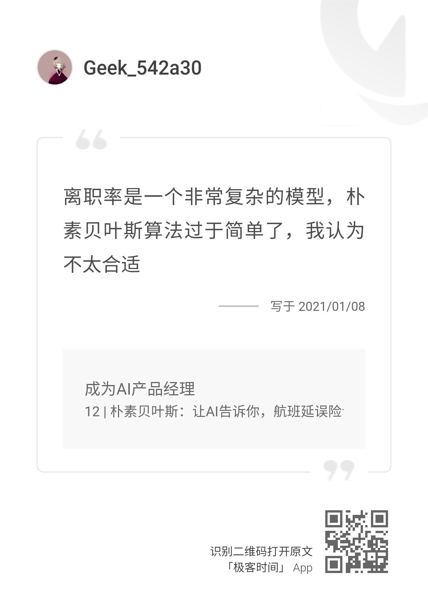
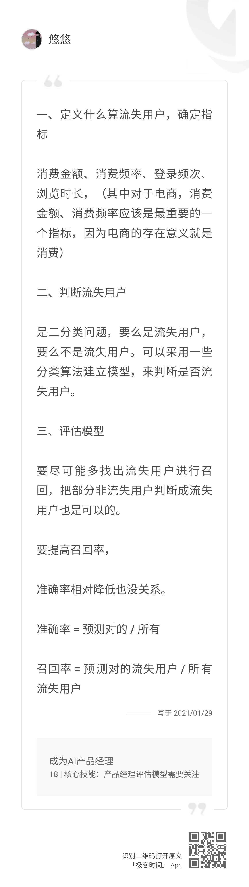

- 00 开篇词 你好，产品经理！你的未来价值壁垒在哪儿？.md
- 01 行业视角：产品经理眼中的人工智能.md
- 02 个人视角：成为AI产品经理，要先搞定这两个问题.md
- 03 技术视角：AI产品经理需要懂的技术全景图.md
- 04 过来人讲：成为AI产品经理的两条路径.md
- 05 通过一个 AI 产品的落地，掌握产品经理工作全流程.md
- 06 AI 模型的构建过程是怎样的？（上）.md
- 07 AI模型的构建过程是怎样的（下）.md
- 08 算法全景图：AI产品经理必须要懂的算法有哪些？.md
- 09 K近邻算法：机器学习入门必学算法.md
- 10 线性回归：教你预测，投放多少广告带来的收益最大.md
- 11 逻辑回归：如何预测用户是否会购买商品？.md
- 12 朴素贝叶斯：让AI告诉你，航班延误险该不该买？.md
- 13 决策树与随机森林：如何预测用户会不会违约？.md
- 14 支持向量机：怎么预测股票市场的涨与跌？.md
- 15 K-means 聚类算法：如何挖掘高价值用户？.md
- 16 深度学习：当今最火的机器学习技术，你一定要知道.md
- 17 模型评估：从一个失控的项目看优秀的产品经理如何评估AI模型？.md
- 18 核心技能：产品经理评估模型需要关注哪些指标？.md
- 19 模型性能评估（一）：从信用评分产品看什么是混淆矩阵？.md
- 20 模型性能评估（二）：从信用评分产品看什么是KS、AUC？.md
- 21 模型性能评估（三）：从股价预测产品看回归算法常用的评估指标.md
- 22 模型稳定性评估：如何用PSI来评估信用评分产品的稳定性？.md
- 23 模型监控：产品经理如何建设算法模型监控指标体系？.md
- 24 推荐类产品（一）：推荐系统产品经理的工作职责与必备技能.md
- 25 推荐类产品（二）：从0打造电商个性化推荐系统产品.md
- 26 预测类产品（一）：用户复购意向预测的底层逻辑是什么？.md
- 27 预测类产品（二）：从0打造一款预测用户复购意向的产品.md
- 28 预测类产品（三）：从0打造一款“大白信用评分产品”.md
- 29 自然语言处理产品：从0打造一款智能客服产品.md
- 30 AI产品经理，你该如何提升自己的价值？.md
- 31 AI产品经理面试，这些问题你必须会答！.md
- 春节加餐1 用户增长模型：怎么利用AI技术判断新渠道性价比？.md
- 春节加餐2 一次答疑，带你回顾模型评估的所有基础概念.md
- 期中周测试题 ，你做对了吗？.md
- 期中答疑 AI产品经理热门问题答疑合集.md
- 结束语 唯一不变的，就是变化本身！.md
春节加餐2 一次答疑，带你回顾模型评估的所有基础概念
你好，我是海丰。
今天是我们春节假期的第二篇加餐。这节课，我筛选出了一些常见的课后问题，对它们做了统一的整理，同时也对一些优质回答做了补充讲解，希望更多同学可以进行参考。
常见问题
问题1：老师，我总是容易弄混KS、PSI等很多指标。
我看到有很多同学提出类似的问题，这些都是AI产品经理需要掌握的基础概念，而且在接下来的项目实践篇都会涉及。所以这里，我会把一些基础概念进行汇总，希望能再帮你巩固一下。

最后，我再补充解释一下OOT这个基础概念。OOT是跨时间测试，使用的样本是和模型训练集，验证集没有交集的样本，目的是用来判断模型的泛化能力。我在第3讲提到过:
在我刚开始转做 AI 产品经理的时候，遇到过这么一件事儿，我们的用户年龄预测模型训练时候 的 KS 值（模型中用于区分预测正负样本分隔程度的评价指标）很高，但是 OOT 测试的时候 KS 还不足 10。当我拿着结果去找算法同学沟通的时候，他就说了一句，“可能是过拟合了，我再改改”。
也有同学提问说，“不明白为什么OOT过高就是模型样本选择的问题？”我这里表达的意思，其实不是OOT过高就是模型样本选择有问题，而是说，如果模型在验证集上的KS值不错，但到了OOT测试的时候KS反而不好，就说明，可能是我们当时选择的样本不合理。比如：训练和验证样本抽取的时间过早，很多数据发生了变化，这就导致模型在过去样本上表现好，但在目前样本上不适用。
课后讨论题
问题2：假设，我们业务方 HR 团队希望你分析每一个员工的离职概率，你觉得用朴素贝叶斯合不合适？为什么？（12 | 朴素贝叶斯：让AI告诉你，航班延误险该不该买？）

首先，我非常认可这位同学的观点。离职率的预测是一个非常复杂的模型，正常情况来说，只用朴素贝叶斯大概率是不够的。但作为产品经理，我们要回到场景上看问题，场景不同，选择的模型不同。因此，我认为对于这个问题，我们可以分为两个阶段来考虑。
第一个阶段：快速响应，从0到1。我们要结合成本来考量，因为一般公司内部部门的诉求样本比较少，并且他们对准确率的接受程度比较大，他们在意的是从无到有。那么，针对启动期没有效果指标可以参考的情况，我们可以先用朴素贝叶斯来完成业务方从无到有的需求，做到快速响应。
第二个阶段：根据实际情况，考虑资源倾斜。这个阶段，我们就要看模型的实际使用情况。不过，一般来说，内部部门的项目就到此为止。但如果你是在众包机构工作，就需要切实投入更多的资源，来训练一个模型解决资源倾斜的问题。
希望同学们可以根据我提供的思路，来继续深入思考一下这个问题。
问题3：假设，你们公司是做电商业务的，现在领导打算让你做流失用户的召回，你认为评估这个模型的指标都有哪些？为什么？（18 | 核心技能：产品经理评估模型需要关注哪些指标？）

这位同学的思路很好！下面，我们再来说一下我的思路。对于产品经理来说，我们首先需要明确做一件事情的目的是什么，领导预期达到的目标是怎么样的，然后明确指标的计算口径。
其次，我们要明确这个问题属于什么问题。对于判断流失用户，大部分场景都定义为分类问题。在实际操作中，它也可能被当作一个回归问题来处理（比如，我们判断用户多久之后会流失）。总的来说，分类问题还是使用KS作为评估指标比较多。
最后，就是模型的评估。一般来说，我们给到业务评估指标会使用精确率和召回率，这是一对经常被同时使用的指标。这里，我还要提醒你一点，精确率和准确率是两个不一样的指标，它们的概念，我都总结在了刚才的脑图中，我们要记住。除此之外，因为流失用户在整个用户群体中占比不会太大，所以我们一般不使用准确率作为评估指标。
最后，春节假期就快结束了，我也希望这次加餐能帮助你做好准备，迎接新的挑战，我们节后再见！
© 2019 - 2023 Liangliang Lee. Powered by gin and hexo-theme-book.